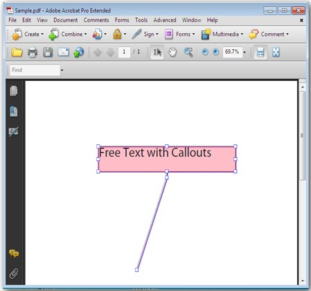
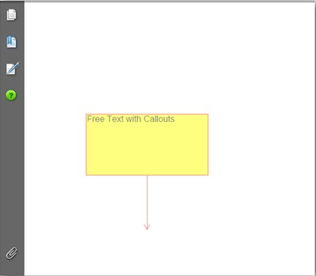

This feature enables the user to display the text directly on the page. Unlike an ordinary text annotation, a free text annotation has no open or closed state; the text is not displayed in the pop-up window. If the user wants to add a comment directly, without placing it in a pop-up window, FreeTextAnnotation can be used. Free Text Annotations can be included anywhere in the PDF Document by specifying the location and the CallOutLine points. While creating the project, the Interactive namespace has to be added in the project to enable this feature.

Figure 28: Free Text Annotation
List of Properties
The following table lists the properties available.
|
Property |
Type |
Value It Accepts |
Description |
|
MarkupText |
String |
String |
Allows you to set the comment text. |
|
TextMarkupColor |
Color |
PdfColor |
Allows you to set the color of the comment text. |
|
Font |
Font |
PdfStandardFont/PdfTrueTypeFont |
Allows you to set the font type for the comment text. |
|
Color |
Color |
PdfColor |
Allows you to set the background color of the Annotation box. |
|
BorderColor |
Color |
PdfColor |
Allows you to set the border color of the Annotation box. |
|
Border |
float |
PdfAnnotationBorder |
Allows you to set the border type of the Annotation box. |
|
LineEndingStyle |
lineStyle |
PdfLineEndingStyle |
Allows you to set the line ending style for the callout line. |
|
AnnotationFlags |
PdfAnnotationFlag |
PdfAnnotationFlags |
Allows you to set annotation flags. |
|
Opacity |
opacity |
Float |
Allows you to set the opacity of the Annotation box. |
|
CalloutLines |
Points |
PointF[] |
Allows you to set the starting and ending coordinates of the callout line. |
List of Methods
The following table lists the methods available.
|
Method |
Parameters of the Method |
Return Type |
Purpose |
|
PdfFreeTextAnnotation |
PdfFreeTextAnnotation(System.Drawing.RectangleF) |
Annotations |
Creates annotation to be added to the PDF document. |
Creating a Free Text Annotation
The following code snippet illustrates the creation of Free Text Annotation in PDF.
|
[C#]
PdfFreeTextAnnotation annot = new PdfFreeTextAnnotation(new RectangleF(50, 100, 100, 50));
annot.MarkupText = "Free Text with Callouts";
annot.TextMarkupColor = new PdfColor(Color.Black); annot.Font = new PdfStandardFont(PdfFontFamily.Helvetica, 7f); annot.Color = new PdfColor(Color.Yellow); annot.BorderColor = new PdfColor(Color.Red); annot.Border = new PdfAnnotationBorder(.5f); annot.LineEndingStyle = PdfLineEndingStyle.OpenArrow; annot.AnnotationFlags = PdfAnnotationFlags.Default; annot.Text = "Free Text"; annot.Opacity = 0.5f; PointF[] points = { new PointF(100, 400), new PointF(100, 450) };
annot.CalloutLines = points;
page.Annotations.Add(annot);
|
Run the code. You have successfully created a Free Text Annotation box.

Figure 29: Free Text Annotation